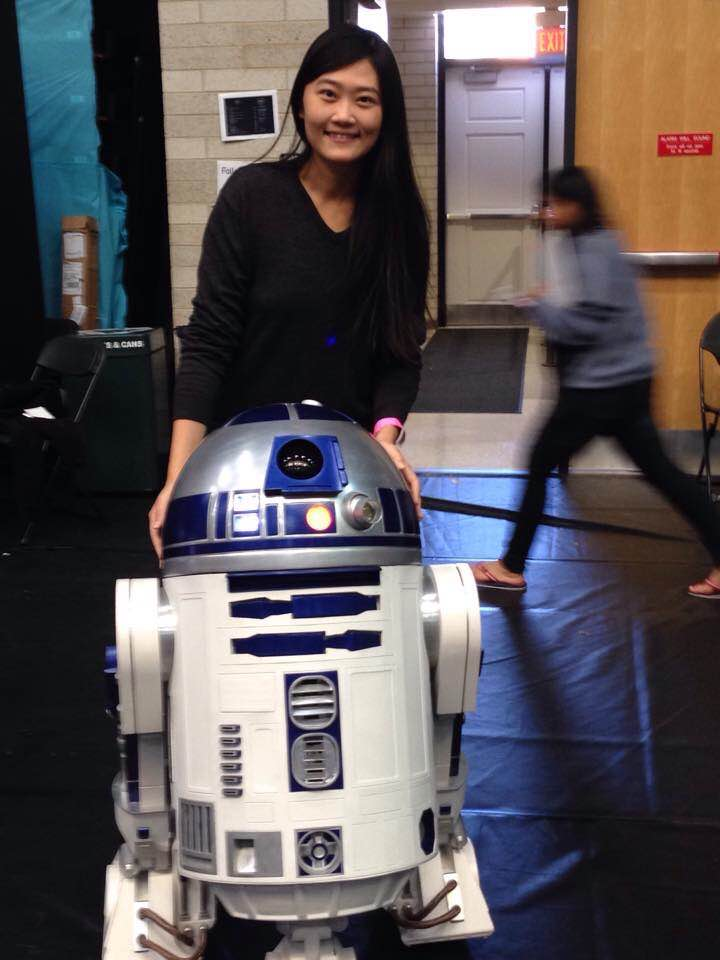

Hi, I'm Mandy
Welcome to my Coding House #ChangeTheRatio Scholarship entry. You can learn more about me here if you wish.
Thanks for visitng!


Welcome to my Coding House #ChangeTheRatio Scholarship entry. You can learn more about me here if you wish.
Here's why I have what it takes to thrive at Coding House
More to explain
In college, despite my double specializations in product development and financial planning, I also had double minors in Economic and French. My passion and my capacity to learn were also recognized at work. I have done five internships from 2011-2013 while obtaining my college degree because I valued hands on experience and understand the importance of real-world working experience.
In regards to learning code, I have been using different online resources to teach myself code. My curiosity to new technologies always push me out of my comfort zone. Even though I may not understand certain concepts at the very first time, I would keep searching materials online and learn from reading or watching tutorials. You can find a list of resources I used to learn code here since my coding journey began in October. I understand this industry is constantly evolving and new technologies are put out there everyday. One must stay hungry and foolish to learn for a lifetime as a developer. I am committed to make the change and become a self-reliant developer.
More to explain
Growing up as a kid, I saw how hard my parents worked to support the family. They are my role models. As the second generation of the chinese immigrants, I managed to enroll as a full-time student in New York City meanwhile working at JP Morgan Chase and interned at different corporate retail companies. I graduated with 3.5 GPA and had five internships under my belt which highly boosted my value to the employers.
After I graduated from college, I worked as a retail planning analyst. Every day I worked from 7am to 7pm sometimes until 8pm depends on the season. Since my work invloved a lot of reports analysis, bringing work to home for the weekend are nothing new in the industry.
In November 2015, I attended my first Hackathon at University of Maryland. During the two days Hackathon, we were challenged to pitch an idea and built a demo within 24 hours. I stayed up all night to work on the front end side of the project. Our creativity and innovative UI/UX Design, helped us stand out from 20 plus groups of hackers and win the champion of JP Morgan Chase Challenge. Here is a link to our project.
More to explain
During the month of December, I would get up at 7am every day and followed through my study schedule on what to learn and achieve each day. Even on Christmas Day and at New Year Eve, I stayed at home and continued to work on my projects. Here is a link to all the projects I built during the Christmas holiday. I am a very self-disciplined person that when I set up a goal, I do not and never give up. My goal right now is to become a fullstack JavaScript Developer. Nothing will stop me and there is no turning back for me.
I understand programming is not easy and there will be many frustrating moments along the way when I get stuck at different problems. However, my experience as an international student back in 2008 taught me everything is possible as long as I am determined and put enough time and effort into it. I was able to land my first job as a retail planning analyst because of my solid work experience. Although English is my second language, I overcame the language barrier and worked my way through different obstacles. I have come a long way to get to where I am today. Leaving retail industry to the technology world is exciting for me and I will do everything i can to get better at programming.
I believe I can learn programming just like I learned English starting from scratch. I believe I can be a great developer. I want to build applications that improve people's life. I hope to inspire other women that they can become developers too. My long term goal is to work for a company that makes a positive impact on the world.
There are Four major reasons